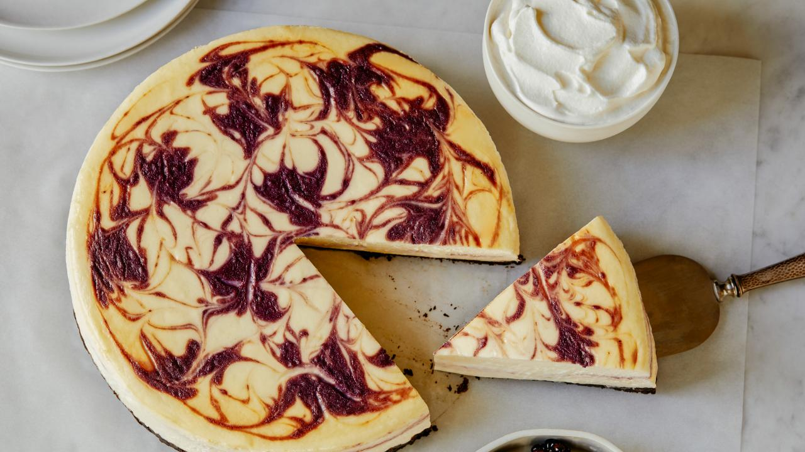

Blackberry Cheesecake
Blackberry Cheesecake is the best.
Ingredients
- 1 package graham crackers
- 4 tablespoons unsalted butter, melted
- 2 tablespoons sugar
- 6 ounces Driscoll's Organic Blackberries
- 1 tablespoon Contreau liqueur
- 3 tablespoons of honey
- 8 ounces cream cheese at room temperature
- 1/2 cup sour cream
- 1 teaspoon vanilla extract
- 2 large eggs
Instructions
- Preheat oven to 350 degrees.
- Place the cream cheese, sour cream, eggs, honey, and vanilla extract in a large deep bowl. Let it sit until it is at room temperature.
- In a blender mix the graham crackers. Melt the butter in the microwave. Mix the graham crackers, butter and sugar in a large glass bowl. Coat the pie pan with butter. Press the mixture into the pie pan. Bake at 350 degrees for 14 minutes. Allow the crust to cool completely while continuing with recipe.
- Reduce the oven temperature to 300 degrees.
- Puree the blackberries in a blender. Strain the puree and discard seeds. Add the Contreau to the puree and mix.
- Now that the cream cheese mixture is at room temperature mix it with an immersion mixer until frothy, about 3 minutes.
- When the crust is completely cooled, add the cream cheese mixture into it. Dribble about half of the blackberry puree in circles around the top of the mixture. With a chopstick trace from the center to the outside all around the cheesecake.
- Bake the cheesecake at 300 degrees for about 50 minutes or until edges are just set and center jiggles slightly. Prop open the oven door slightly and allow the cheesecake to cool inside oven for 1 hour.
- Remove the cheesecake from oven and allow the cheesecake to cool completely. Chill the cheesecake in refrigerator until cold throughout, 4 to 6 hours or overnight.